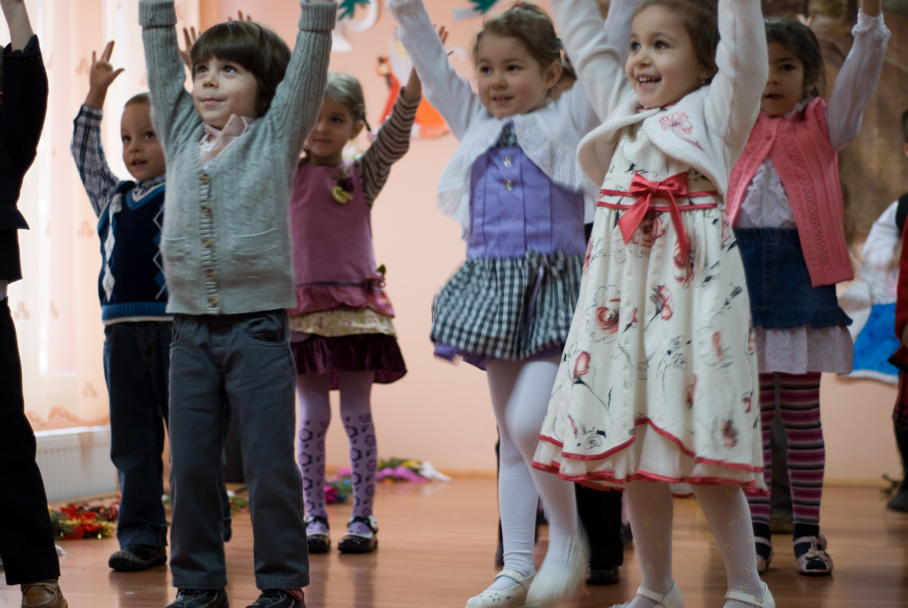

Program Obdaništa Dječija Sreća
Pedagoški pristup i metodologija
U Obdaništu Dječija Sreća naš pedagoški pristup temelji se na holističkom razvoju svakog djeteta. Svi naši edukatori i vaspitači pažljivo prate i prepoznaju individualne potrebe svakog djeteta, omogućujući im razvoj kroz kreativne aktivnosti, igru i istraživanje. Program je osmišljen tako da u potpunosti prati emocionalne, socijalne, intelektualne i fizičke potrebe djece uzrasta od 6 meseci do 6 godina. Fokusiramo se na razvoj samopouzdanja i unutrašnje snage djeteta, kroz sigurno okruženje koje je ujedno i stimulativno.
Prvi koraci: Učenje kroz igru i svakodnevne aktivnosti
U našoj ustanovi, učenje se ne temelji samo na direktnom podučavanju, već na svakodnevnoj interakciji i igri. Djeca kroz igru uče osnovne životne vještine, razvijaju socijalne i emocionalne kapacitete te istražuju svijet oko sebe. Program uključuje aktivnosti koje podstiču djecu na kreativnost, radoznalost i timski rad, te razvijaju njihove vještine u malim, sigurnim grupama.
Pedagoški principi:
- Individualni pristup: Svako dijete je jedinstveno i razvija se svojim tempom. Naš cilj je prepoznati specifične talente i interese svakog djeteta, kao i potaknuti njihov razvoj kroz prilagođene aktivnosti.
- Učenje kroz igru: Program se temelji na principu da djeca najbolje uče kroz interaktivnu igru i praktična iskustva. Zajedno s vaspitačima, djeca istražuju razne materijale, stvaraju umjetnost, učestvuju u grupnim igrama i zajedničkim projektima.
- Razvoj socijalnih vještina: U grupama, djeca uče suradnju, dijeljenje, poštovanje drugih i razvijaju socijalnu odgovornost.
- Bezbednost i briga: Sigurnost i dobrobit svakog djeteta su naš prioritet. Naša ustanova je opremljena sa svim potrebnim resursima koji osiguravaju sigurnost i udobnost djeteta.
Faze razvoja učenja i aktivnosti:
1. Rani razvoj (6 meseci - 3 godine):
Za najmlađe, naš program uključuje senzorne aktivnosti, razvoj motorike i prve socijalne interakcije. Djeca imaju priliku učiti kroz igračke koje podstiču razvoj fine motorike, koordinacije i osnovnih senzacija.
2. Predškolski uzrast (3 - 6 godina):
Djeca u ovom uzrastu počinju razvijati osnovne kognitivne vještine, kao što su prepoznavanje brojeva, slova, boja i oblika. Aktivnosti koje omogućuju ranu pismenost i matematiku, kroz igre i interaktivne zadatke, pomažu djeci da razvijaju osnovne akademske vještine.
3. Razvoj socijalnih i emocionalnih vještina:
Kroz grupne igre, djeca uče ovažavanje pravila, postavljanje granica, rješavanje konflikata i razvoj prijateljskih odnosa. Program uključuje i aktivnosti koje podstiču djecu na kreativno izražavanje, kao što su crtanje, ples i gluma.
Okruženje i aktivnosti:
- Prostor i materijali: Naše prostorije su pažljivo dizajnirane kako bi bile sigurne, stimulativne i prilagođene potrebama djece. Svi materijali su odabrani tako da potiču djecu na istraživanje, učenje i razvoj kroz interakciju.
- Vanjski prostor: Igralište je posebno dizajnirano kako bi djeca imala priliku za fizičke aktivnosti, kao što su penjanje, vožnja biciklom, igra u pjesku i istraživanje prirode. Vanjski prostor također omogućava djeci da se opuste i provode vrijeme u prirodi, što je važno za njihov fizički i mentalni razvoj.
Obrazovni ciljevi i filozofija:
- Holistički pristup: Naš program je zasnovan na principu da djeca najbolje rastu i razvijaju se kada su u okruženju koje podržava njihove fizičke, intelektualne, socijalne i emocionalne potrebe.
- Osnaživanje individualnosti: S obzirom na to da svako dijete ima svoj tempo učenja, naš cilj je da im pružimo prostor i podršku za razvijanje njihovih vještina, samopouzdanja i ljubavi prema učenju.
- Podsticanje kreativnosti: Program je osmišljen tako da omogućava djeci da se kreativno izražavaju kroz umjetnost, muziku, ples i druge aktivnosti koje podstiču njihovu maštu i radoznalost.
Ciljevi obrazovanja u našem vrtiću:
- Razviti emocionalnu stabilnost i socijalne vještine.
- Poticati kreativnost, kritičko razmišljanje i samostalnost.
- Podsticati ljubav prema učenju kroz interaktivnu igru.
- Omogućiti djeci sigurno okruženje za razvoj svih svojih potencijala.
Naš dnevni raspored
Svaki dan u našem vrtiću je ispunjen raznolikim aktivnostima koje su pažljivo osmišljene kako bi zadovoljile sve aspekte razvoja naših mališana. Program je usmjeren na emocionalne, fizičke i intelektualne potrebe djece, stvarajući okruženje u kojem se osjećaju sigurno i voljeno. Evo kako izgleda jedan tipičan dan u našem vrtiću, ispunjen igrom, učenjem i ljubavlju:
Dolazak i prilagodba
Za djecu, ali i za roditelje, dolazak u vrtić je važan trenutak. U početku, dok se djeca prilagođavaju novom okruženju, mogu osjećati nesigurno. Naš tim vaspitača pruža puno pažnje i strpljenja, omogućavajući svakom djetetu da se polako, u svom tempu, navikne na novu dnevnu rutinu. Kroz ljubav i toplinu, stvaramo sigurno okruženje u kojem djeca postupno razvijaju osjećaj povjerenja i sigurnosti.

Doručak
Na početku svakog dana, svi se okupljamo na zajedničkom obroku. Djeca donose svoje užine, a naš cilj je osigurati da ti obroci budu zdrav izbor, bogati hranjivim tvarima koje pružaju energiju za ostatak dana. U mirnoj i prijateljskoj atmosferi, djeca ne samo da uživaju u hrskavim i ukusnim obrocima, već i u razgovoru s vršnjacima, što im pomaže u socijalizaciji i razvoju komunikacijskih vještina.
Igra na otvorenom
Ukoliko to vremenske prilike dozvoljavaju, odmah nakon doručka djeca izlaze na svježi zrak i uživaju u igri na otvorenom. Na našem igralištu, mališani se mogu penjati, trčati i istraživati prirodu oko sebe. Ovaj period igre im pomaže u razvoju motornih vještina, fizičke snage i koordinacije, ali i u učenju zajedništva i međusobnog poštovanja kroz igru s prijateljima.
Igra u unutrašnjim prostorijama
Kada vremenski uvjeti nisu pogodni za boravak na otvorenom, djeca se vraćaju u unutrašnje prostorije gdje im je omogućeno da se igraju s raznim igračkama i materijalima koji podstiču kreativnost i suradnju. Ovdje mogu samostalno odabrati aktivnosti koje ih zanimaju, ili učestvovati u grupnim igrama, čime razvijaju svoje socijalne vještine i kreativno mišljenje. Svaka igra je prilika za učenje, istraživanje novih ideja i izražavanje kroz igru.
Ručak i vrijeme za odmor
Pred ručak, djeca odlaze oprati ruke i pripremaju se za obrok. Ručak je prilika za uživanje u hranjivim jelima koja zadovoljavaju sve nutritivne potrebe, a nakon toga slijedi vrijeme za odmor. U tišini i miru, djeca mogu odspavati ili, ako nisu umorna, baviti se tihim aktivnostima poput čitanja ili slaganja. Vrijeme za odmor je ključno za obnovu energije, kako bi djeca bila spremna za ostatak dana i daljnje aktivnosti.
Završetak dana
Po povratku iz odmora, djeca se pripremaju za završni dio dana. Iako je dan pri kraju, mališani još uvijek imaju priliku za igru, kreativne aktivnosti i zajedničko druženje. Ovaj dio dana je opuštajući, a djeca se s veseljem pripremaju za povratak kući, gdje će se prisjećati svega što su naučila i doživjela. Igra i druženje prije nego što budu preuzeti od strane roditelja pružaju im osjećaj ispunjenosti i zadovoljstva.